結構動力基本性質及原理
點各章標題旁的 ▶ 可直接跳到影片該段。
0底層邏輯：兩個數字
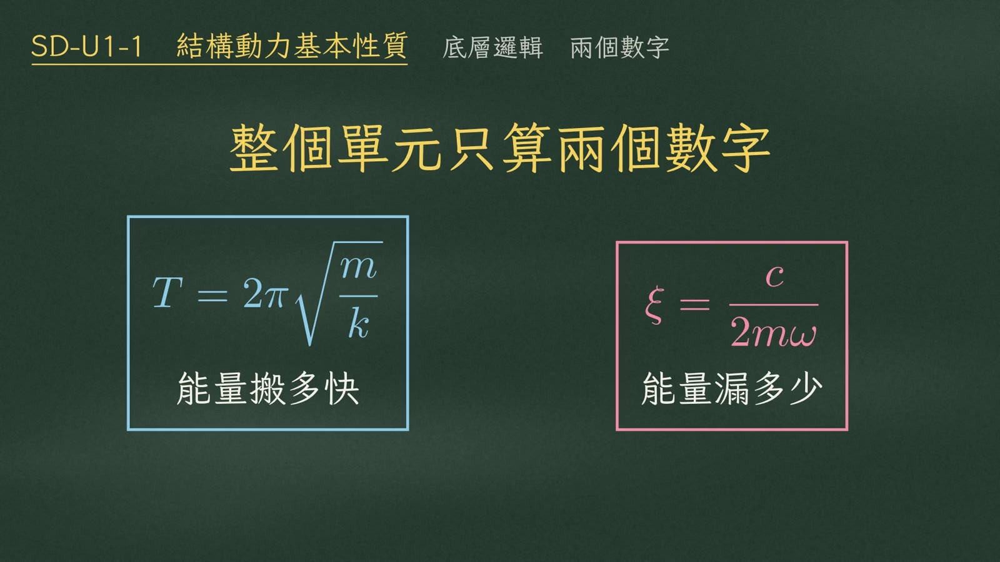
結構動力學公式一大堆，但底層邏輯很單純：整個單元只在算兩個數字。
| 數字 | 公式 | 物理意義 |
|---|---|---|
| 週期 T | \( \color{#2f7fb0}{T = 2\pi\sqrt{m/k}} \) | 能量搬得多快 |
| 阻尼比 ξ | \( \color{#c0457a}{\xi = \dfrac{c}{2m\omega}} \) | 能量漏掉多少 |
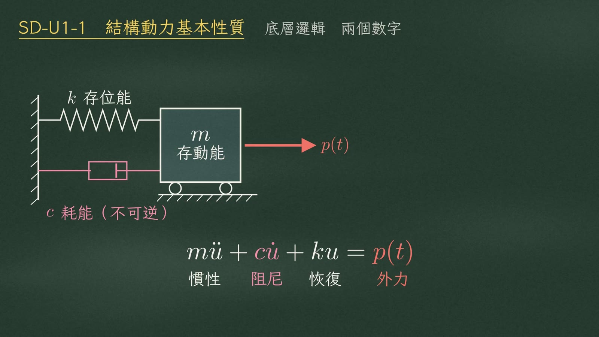
建築簡化成三個元件：質量 \(m\) 存動能，彈簧 \(k\) 存位能，阻尼 \(c\) 把振動能變成熱。運動方程式就是：慣性力加阻尼力加恢復力，等於外力。
$$ \underbrace{m\ddot u}_{\text{慣性}} + \underbrace{c\dot u}_{\text{阻尼}} + \underbrace{ku}_{\text{恢復}} = \underbrace{p(t)}_{\text{外力}} $$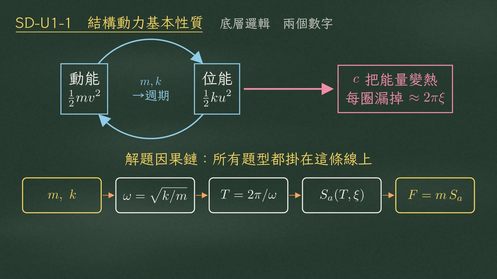
\(m\) 和 \(k\) 讓能量來回搬，決定週期；\(c\) 讓能量一去不回，每振一圈大約漏掉 \(2\pi\xi\)。
1勁度 k：邊界條件
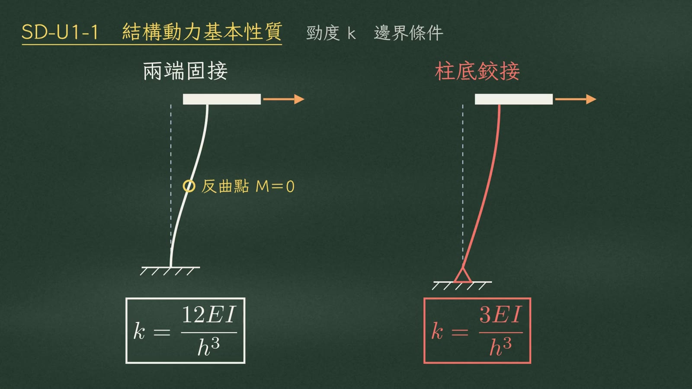
先看 \(k\)。同一根柱、同樣的 \(EI\) 和 \(h\)，勁度可能差四倍，差別只在柱端能不能轉。
| 邊界 | 變形 | 側向勁度 |
|---|---|---|
| 兩端固接 | 雙曲率，中間有反曲點 | \( k = \dfrac{12EI}{h^3} \) |
| 柱底鉸接 | 單曲率 | \( k = \dfrac{3EI}{h^3} \) |
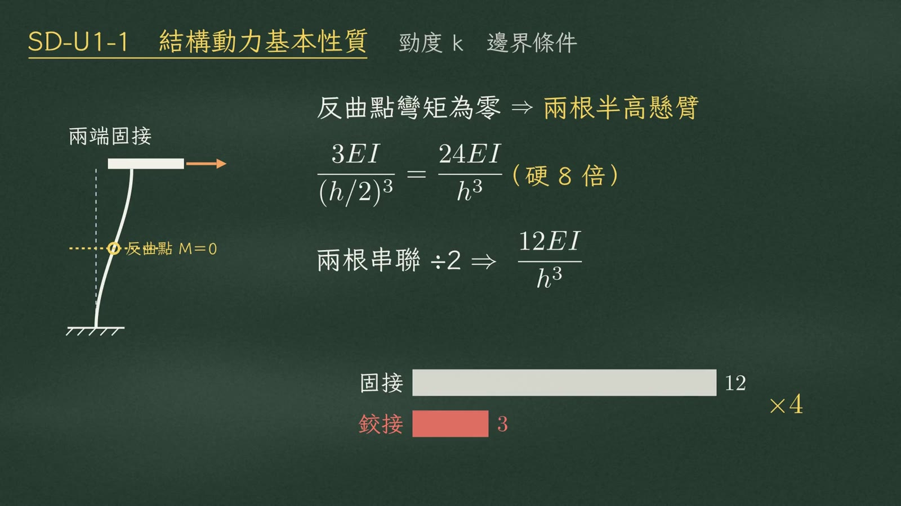
為什麼剛好四倍？反曲點彎矩為零，等於把柱拆成兩根半高的懸臂。勁度跟 \(h^3\) 成反比，半高就硬八倍，兩根串聯再除以二，正好四倍。
$$ \frac{3EI}{(h/2)^3} = \frac{24EI}{h^3}\ (\text{硬 8 倍}) \quad\xrightarrow{\text{兩根串聯}\ \div 2}\quad \frac{12EI}{h^3} $$例題一 單層樓的週期
樓重 \(W = 1200\ \text{kN}\)，四根 \(70\times70\ \text{cm}\) 的柱，高 \(h = 4\ \text{m}\)，\(E = 2.5\times10^7\ \text{kN/m}^2\)。
$$ m = \frac{W}{g} = \frac{1200}{9.81} = 122.32\ \text{t}, \qquad I = \frac{0.7^4}{12} = 0.020008 \;\Rightarrow\; EI = 500{,}208 $$ $$ k = 4\times\frac{12EI}{h^3} = 375{,}156\ \text{kN/m}, \qquad T = 2\pi\sqrt{\frac{m}{k}} = 0.1135\ \text{s} $$改成鉸接，\(k\) 剩四分之一（\(k\div4 = 93{,}789\)），週期變兩倍：\(T = 0.2269\ \text{s}\)。
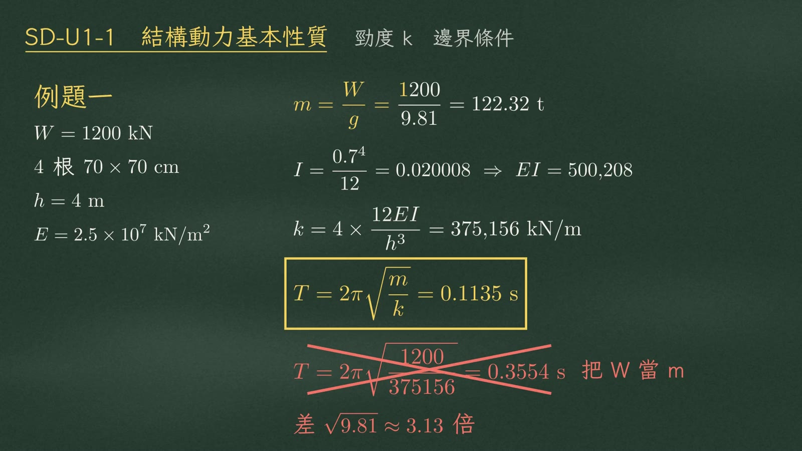
把重量 1200 直接當質量，週期會算成 \( T = 2\pi\sqrt{1200/375156} = 0.3554\ \text{s} \)，差了 \(\sqrt{9.81}\approx 3.13\)，大約三倍。
2組合勁度：並聯與串聯
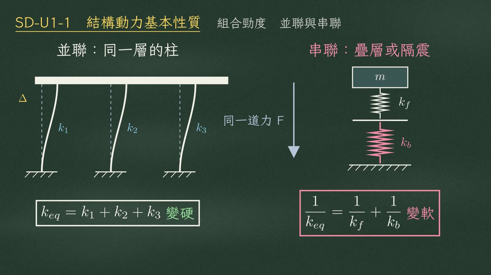
柱子不只一根時，看誰被強迫一樣。
| 型式 | 誰相同 | 公式 | 結果 |
|---|---|---|---|
| 並聯（同一層的柱） | 樓版強迫同一個位移 \(\Delta\) | \(k_{eq} = k_1 + k_2 + k_3\) | 越加越硬 |
| 串聯（上下疊層、加隔震層） | 同一道力 \(F\) 依序穿過 | \(\dfrac{1}{k_{eq}} = \dfrac{1}{k_f} + \dfrac{1}{k_b}\) | 比最軟的那個還軟 |
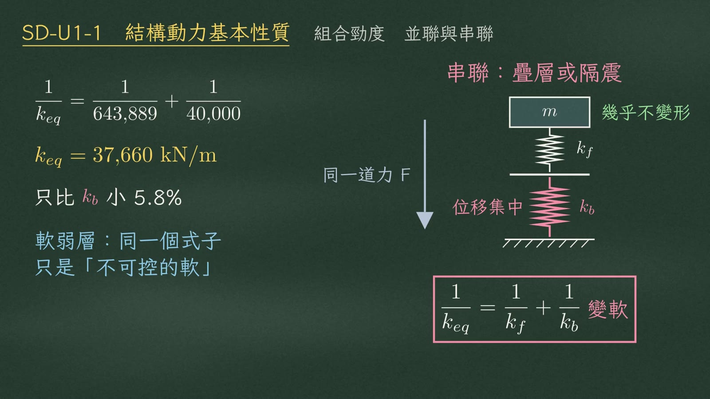
例如上部結構 \(k_f = 643{,}889\)（約六十四萬），隔震層只有 \(k_b = 40{,}000\)：
$$ \frac{1}{k_{eq}} = \frac{1}{643{,}889} + \frac{1}{40{,}000} \;\Rightarrow\; k_{eq} = 37{,}660\ \text{kN/m} $$只比隔震層小 5.8%。上部幾乎不變形，位移全集中在隔震層，這就是隔震的設計意圖。
3自由振動：阻尼只改包絡線
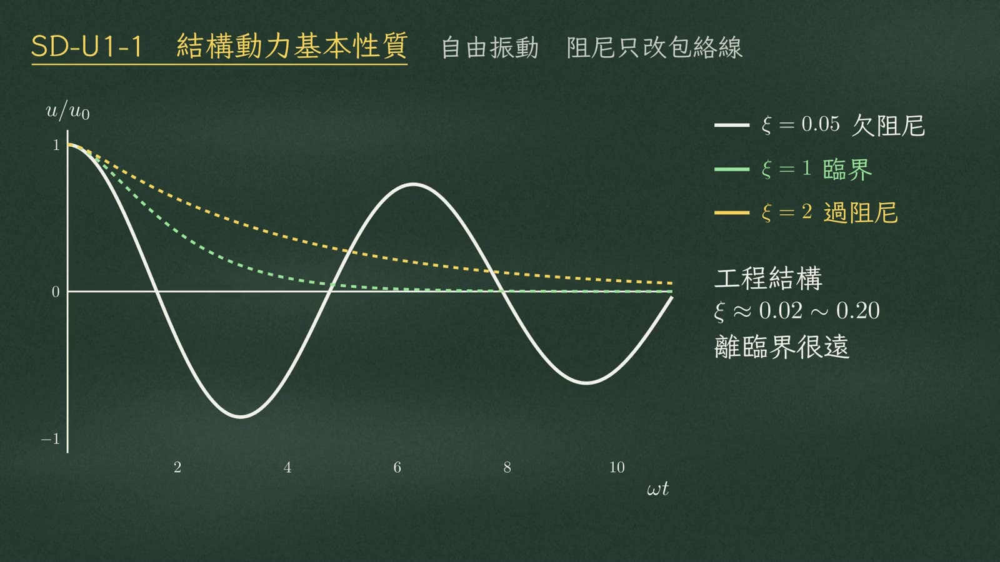
接著看阻尼比。自由振動時：
| 阻尼比 | 名稱 | 行為 |
|---|---|---|
| \(\xi < 1\) | 欠阻尼 | 來回振盪 |
| \(\xi = 1\) | 臨界阻尼 | 只會單向爬回原點 |
| \(\xi > 1\) | 過阻尼 |
工程結構幾乎都在 \(\xi \approx 0.02 \sim 0.20\) 之間，離臨界很遠。
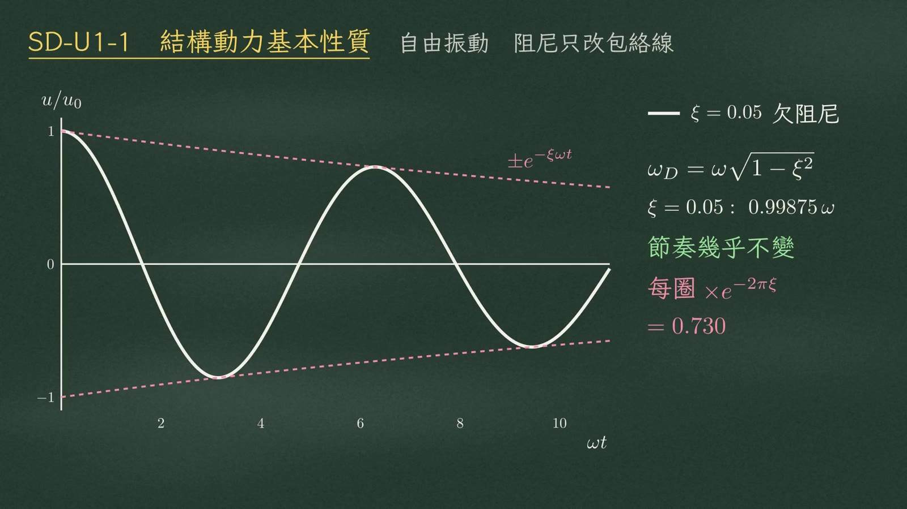
阻尼只改包絡線，不改節奏。
$$ \omega_D = \omega\sqrt{1-\xi^2}, \qquad \xi = 0.05:\ \omega_D = 0.99875\,\omega $$5% 時只差 0.125%，節奏幾乎不變。真正改變的是振幅：每振一整圈乘上 \(e^{-2\pi\xi}\)，5% 時 \(= 0.730\)，大約只剩七成三。
4對數衰減率：例題二
阻尼比的唯一入口是對數衰減率：取相隔 \(n\) 個週期的兩個峰，
$$ \delta = \frac{1}{n}\ln\frac{u_i}{u_{i+n}}, \qquad \xi \approx \frac{\delta}{2\pi} $$例題二 由自由振動紀錄求阻尼比
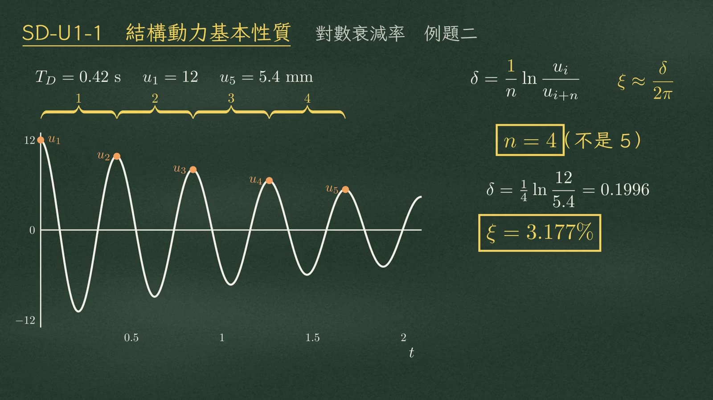
阻尼週期 \(T_D = 0.42\ \text{s}\)，第一峰 \(u_1 = 12\ \text{mm}\)，第五峰 \(u_5 = 5.4\ \text{mm}\)。
關鍵在 \(n\)：第一峰到第五峰只有四個間隔，\(n = 4\)，不是 5。
$$ \delta = \tfrac14 \ln\frac{12}{5.4} = 0.1996 \;\Rightarrow\; \xi = 3.177\% $$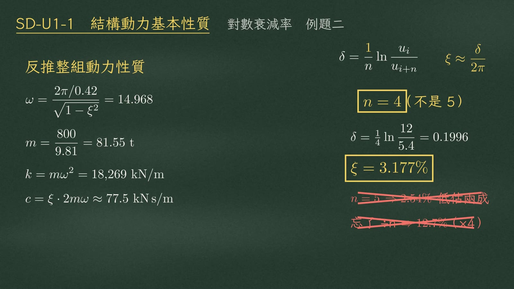
| 錯法 | 結果 | 偏差 |
|---|---|---|
| \(n\) 數成 5 | \(\xi = 2.54\%\) | 低估兩成 |
| 忘了除以 \(n\) | \(\xi = 12.7\%\) | 高估四倍 |
接著反推整組動力性質（樓重 \(800\ \text{kN}\)）：
$$ \omega = \frac{2\pi/0.42}{\sqrt{1-\xi^2}} = 14.968, \qquad m = \frac{800}{9.81} = 81.55\ \text{t} $$ $$ k = m\omega^2 = 18{,}269\ \text{kN/m}, \qquad c = \xi\cdot 2m\omega \approx 77.5\ \text{kN}\cdot\text{s/m} $$5強迫振動：例題三
有外力時，第一件事永遠是算頻率比 \(r = \Omega/\omega\)。
$$ DMF = \frac{1}{\sqrt{(1-r^2)^2 + (2\xi r)^2}}, \qquad r = \frac{\Omega}{\omega}\ (\text{外界}\div\text{結構}) $$| 區段 | 條件 | DMF |
|---|---|---|
| 準靜態 | \(r \ll 1\) | 趨近 1 |
| 共振 | \(r = 1\) | \(\dfrac{1}{2\xi}\) |
| 慣性控制 | \(r \gg 1\)（質量來不及動） | 趨近 0 |
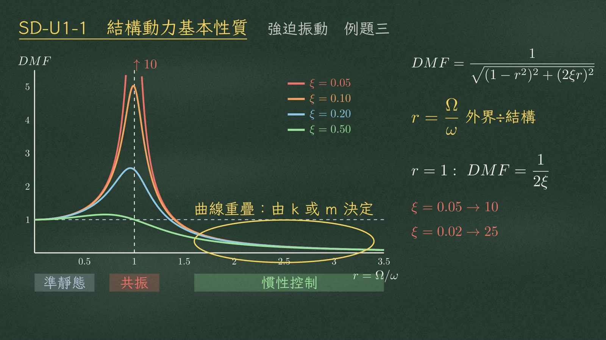
共振放大多少完全看阻尼：\(\xi = 5\%\) 放大 10 倍，鋼結構 \(\xi = 2\%\) 放大 25 倍。
例題三 機器擾動
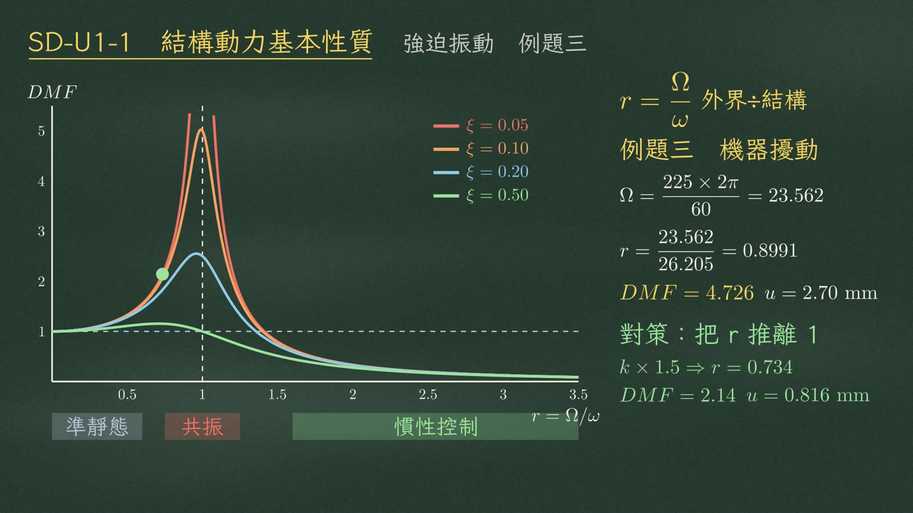
機器每分鐘 225 轉，結構 \(\omega = 26.205\)：
$$ \Omega = \frac{225\times2\pi}{60} = 23.562, \qquad r = \frac{23.562}{26.205} = 0.8991 $$ $$ DMF = 4.726, \qquad u = 2.70\ \text{mm} $$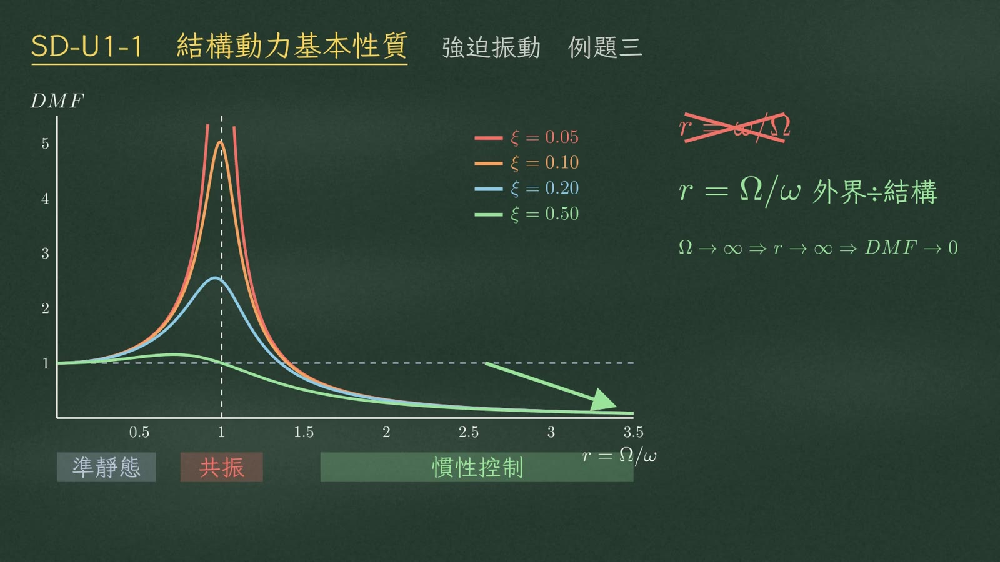
\(r\) 一定是外界除以結構：\(r = \Omega/\omega\)，不是 \(\omega/\Omega\)。
6相位角與每圈耗能
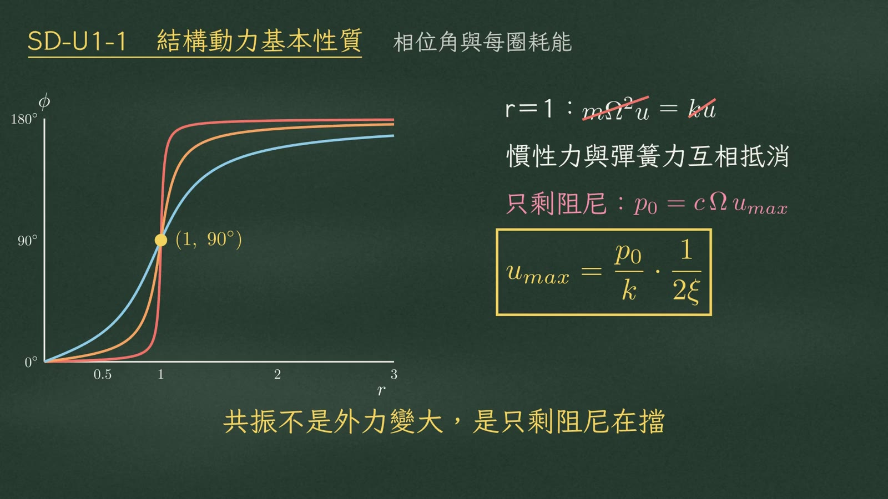
同一條曲線的另一面是相位角。\(r = 1\) 時，不論阻尼多少，相位一律 90°：慣性力和彈簧力剛好抵消，外力只剩阻尼獨自承擔：
$$ r = 1:\ \ m\Omega^2 u = ku \ (\text{互相抵消}) \;\Rightarrow\; p_0 = c\,\Omega\,u_{max} \;\Rightarrow\; u_{max} = \frac{p_0}{k}\cdot\frac{1}{2\xi} $$所以位移等於靜位移乘 \(\dfrac{1}{2\xi}\)。
7傳遞率與隔震：例題四
如果晃的是地面，例如地震，要用加速度傳遞率 \(TR\)（分子比 DMF 多了 \(1+(2\xi r)^2\)）：
$$ TR = \sqrt{\frac{1 + (2\xi r)^2}{(1-r^2)^2 + (2\xi r)^2}} $$所有曲線都交在 \(r = \sqrt2\) 這一點（\(TR = 1\)）；只有 \(r > \sqrt2\)，傳上去的加速度才小於地表，這是隔震有效區。
例題四 加隔震層
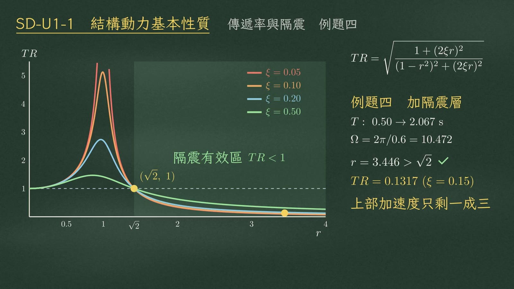
加隔震層後，週期從 0.50 s 拉長到 2.067 s。地動主要週期 0.6 s：
$$ \Omega = \frac{2\pi}{0.6} = 10.472, \qquad r = 3.446 > \sqrt2\ \checkmark, \qquad TR = 0.1317\ (\xi = 0.15) $$上部加速度只剩地表的一成三。
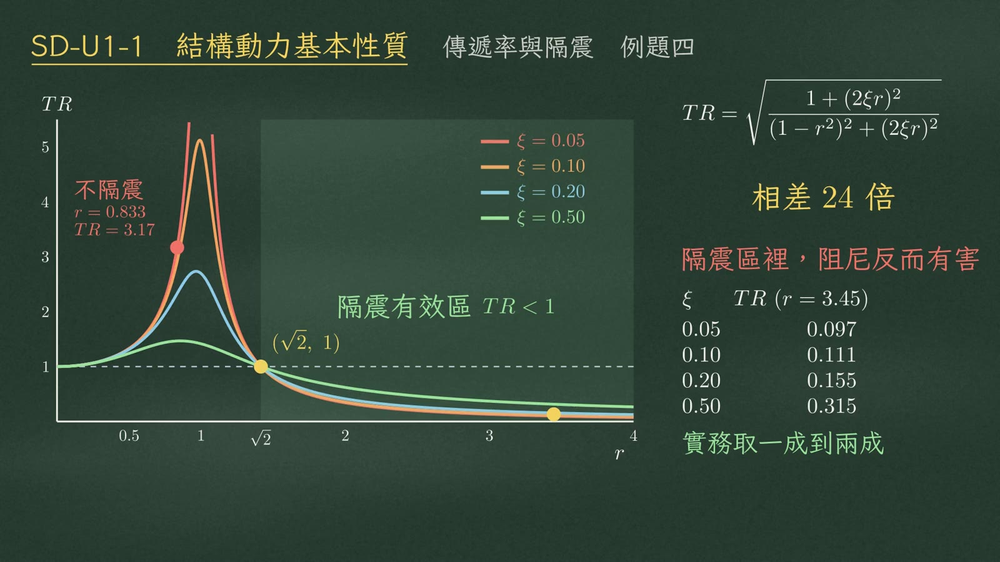
不隔震呢？\(r = 0.833\)，落在共振附近，\(TR = 3.17\)，反而放大三倍多，前後相差 24 倍。
| \(\xi\) | 0.05 | 0.10 | 0.20 | 0.50 |
|---|---|---|---|---|
| \(TR\ (r = 3.45)\) | 0.097 | 0.111 | 0.155 | 0.315 |
8多自由度：例題五
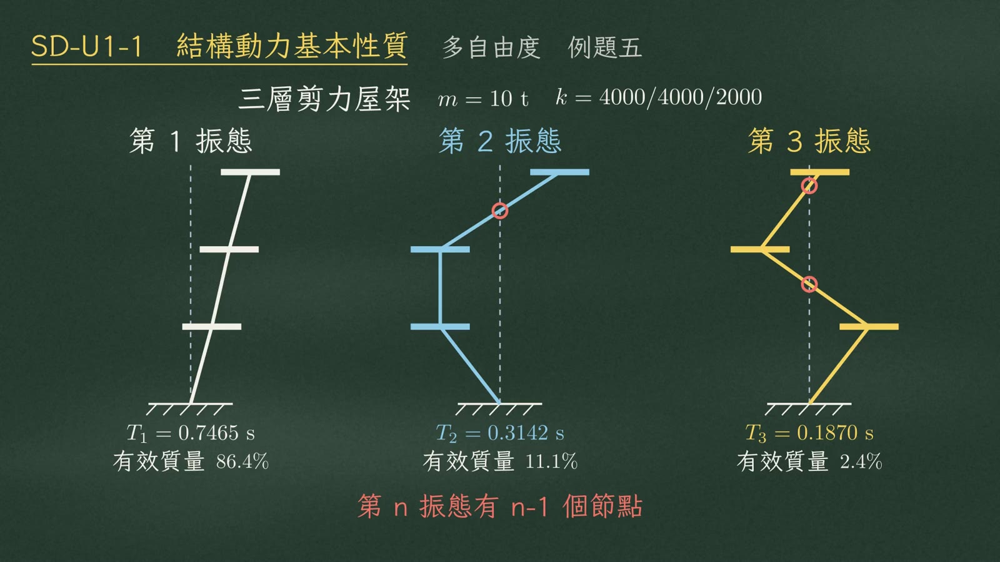
多自由度系統，\(N\) 個自由度就有 \(N\) 組週期和振態。
例題五：三層剪力屋架，每層 \(m = 10\ \text{t}\)，勁度 \(k = 4000 / 4000 / 2000\)：
| 振態 | 週期 | 有效質量 | 節點數 |
|---|---|---|---|
| 第 1 振態 | \(T_1 = 0.7465\ \text{s}\) | 86.4% | 0 |
| 第 2 振態 | \(T_2 = 0.3142\ \text{s}\) | 11.1% | 1 |
| 第 3 振態 | \(T_3 = 0.1870\ \text{s}\) | 2.4% | 2 |
第 \(n\) 振態有 \(n-1\) 個節點，設計靠前一兩個。
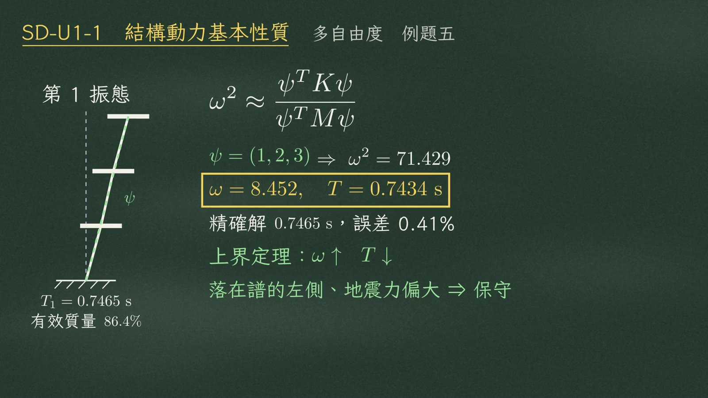
考場上沒空解特徵值，就用 Rayleigh 商。試驗形狀取直線，1 : 2 : 3：
$$ \omega^2 \approx \frac{\psi^T K\psi}{\psi^T M\psi}, \qquad \psi = (1,2,3) \Rightarrow \omega^2 = 71.429 $$ $$ \omega = 8.452, \qquad T = 0.7434\ \text{s}\quad(\text{精確解}\ 0.7465\ \text{s，誤差}\ 0.41\%) $$9出口：反應譜
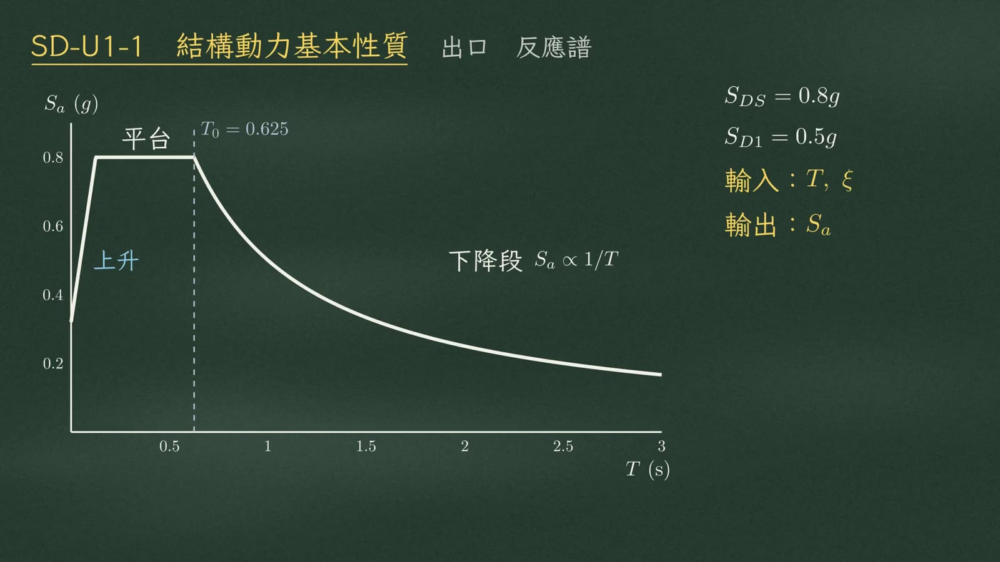
兩個數字的出口是反應譜：拿週期和阻尼比去查（輸入 \(T,\ \xi\)），換回一個 \(S_a\)（輸出）。設計譜分三段：
| 段落 | 特徵 |
|---|---|
| 短週期上升段 | \(S_a\) 隨 \(T\) 上升 |
| 等加速度平台 | \(S_a = S_{DS}\) |
| 下降段 | \(S_a \propto 1/T\) |
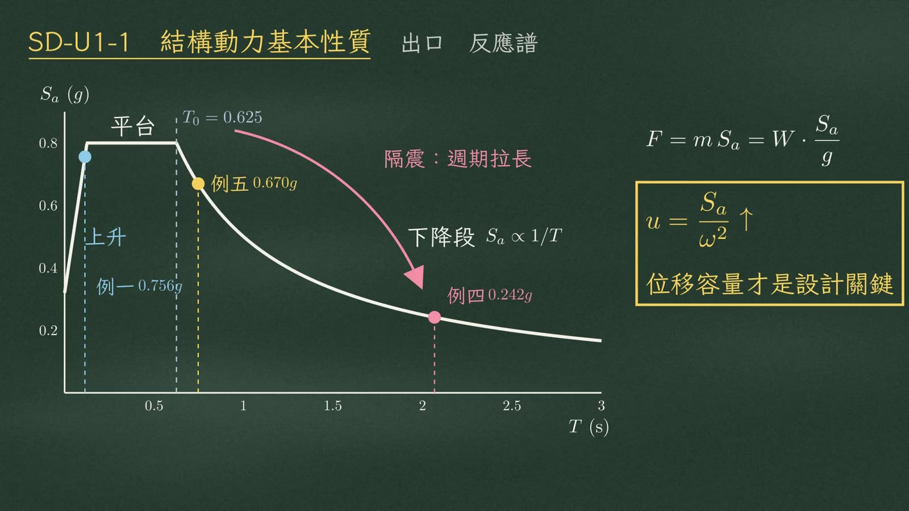
| 例題 | 週期 | 所在段 | \(S_a\) |
|---|---|---|---|
| 例題一 | 0.113 s | 上升段 | 0.756g |
| 例題五 | 0.746 s | 下降段 | 0.670g |
| 例題四（隔震後） | 2.067 s | 下降段 | 0.242g |
10總結：四步與四道防呆
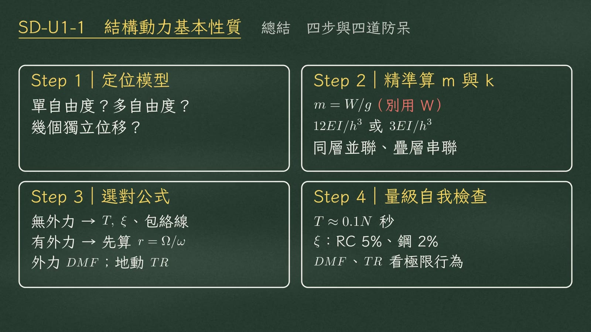
| 步驟 | 內容 |
|---|---|
| Step 1｜定位模型 | 單自由度還是多自由度？幾個獨立位移？ |
| Step 2｜精準算 m 與 k | \(m = W/g\)（別用 \(W\)）；\(12EI/h^3\) 或 \(3EI/h^3\)；同層並聯、疊層串聯 |
| Step 3｜選對公式 | 沒外力看週期與包絡線；有外力先算 \(r = \Omega/\omega\)，外力用 DMF，地動用 TR |
| Step 4｜量級自我檢查 | 週期約 \(0.1N\) 秒（\(N\)＝樓層數）；阻尼比 RC 5%、鋼結構 2%；DMF、TR 看極限行為 |
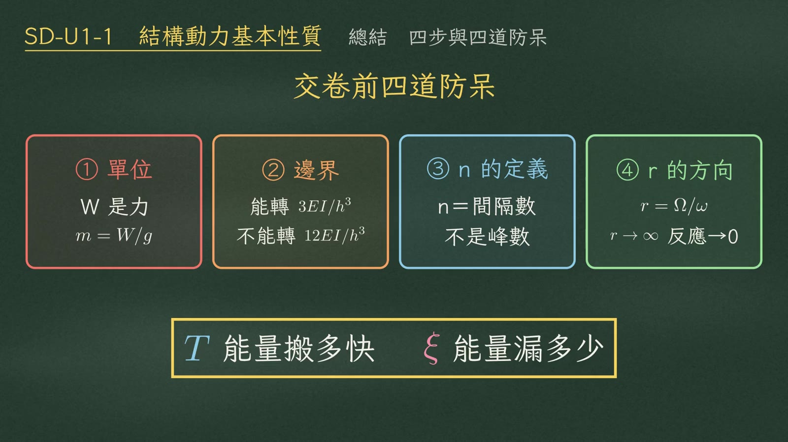
| ① 單位 | \(W\) 是力，\(m = W/g\) |
|---|---|
| ② 邊界 | 柱端能轉用 \(3EI/h^3\)，不能轉用 \(12EI/h^3\) |
| ③ n 的定義 | \(n\) 是間隔數，不是峰數 |
| ④ r 的方向 | \(r = \Omega/\omega\)，外界除以結構；\(r\to\infty\) 反應→0 |